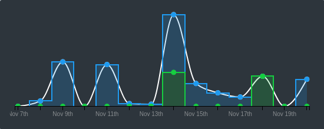
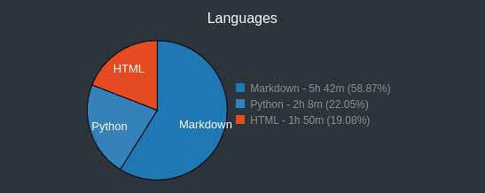

This is the third retrospective of my #100DaysOfCode.
I coded for 9 hours and 41 minutes, according to WakaTime. But since I don’t have the premium subscription (and therefore cannot see past 14 days), I believe it was much more. Too many breaks and time-offs made a huge dent on my performance.

Markdown, Python and HTML are still the top languages, as expected.

Shell Scripting: I started the Linux Upskill Challenge and with that I had the opportunity to finally nail my shell scripting. Much of what I’ve been doing in the last two weeks was completely focused on Linux, so I’m expecting to get that right.
Distractions: 6-day gaps became more frequent, and it frustrated me. There was the CrossFit Games, the new Fedora release and then I decided to do the Linux Upskill Challenge! No wonder I slipped so much…
The Linux Upskill Challenge really got me excited to try and master Shell Scripting and all things Linux. My schedule is unconventional but I’m getting there, eventually.
For more detail on how I did each day, check out my 100 Days of Code Log on Github. Follow me on Twitter for all my 100 Days Of Code tweets.